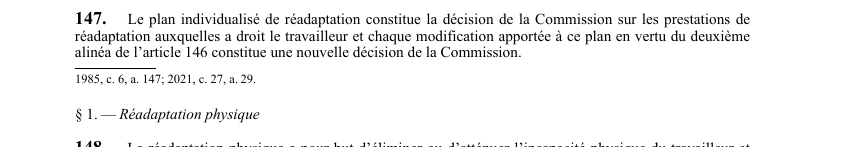

art-147-LATMP : plan de réadaptation vaut décision
Un article du wiki ⚖️ Recueil législatif
En bref
Donne au plan individualisé de réadaptation la valeur juridique d'une décision de la CNESST, et non d'un simple document de suivi.
- Le plan tient lieu de décision de la Commission quant aux prestations de réadaptation auxquelles le travailleur a droit.
- Chaque modification faite en vertu du deuxième alinéa de l'art. 146 compte comme une nouvelle décision, distincte de la précédente.
- Conséquence pratique : chaque version du plan est contestable comme toute décision de la Commission, avec ses propres délais.
- Attention au nom du fichier : la réadaptation physique commence plutôt à l'art. 148.
Visé : CNESST, travailleur · Nature : disposition
🌐 LegisQuébec · 📄 PDF officiel (page 40)
Texte officiel
Le plan individualisé de réadaptation constitue la décision de la Commission sur les prestations de réadaptation auxquelles a droit le travailleur et chaque modification apportée à ce plan en vertu du deuxième alinéa de l’article 146 constitue une nouvelle décision de la Commission.
Texte de l’article 147 LATMP, extrait de la couche texte du PDF officiel (page 40), sans OCR ni retouche. La capture ci-dessous et le PDF font foi.
{kind=link}

Toucher l'image pour l'agrandir🔗 Ouvrir a cette page : LATMP.pdf : page 40 · texte a jour au 20 février 2024
Voir aussi
- 🔧 Modifié par : LMRSST art. 29 (remplacé) · remplace art.
- ↑ Loi : LATMP
Pages qui pointent ici (4)
- Droit à la réadaptation Droit du travail
- Index des décisions : table de travail Recueil législatif
- LATMP : Chapitre V : Réadaptation Recueil législatif
- LMRSST : Chapitre I : Modifications à la LATMP Recueil législatif